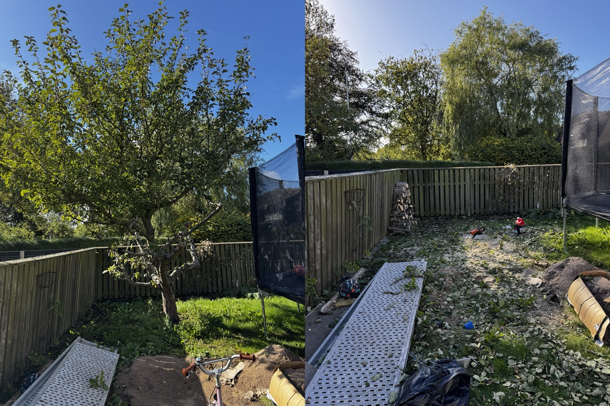
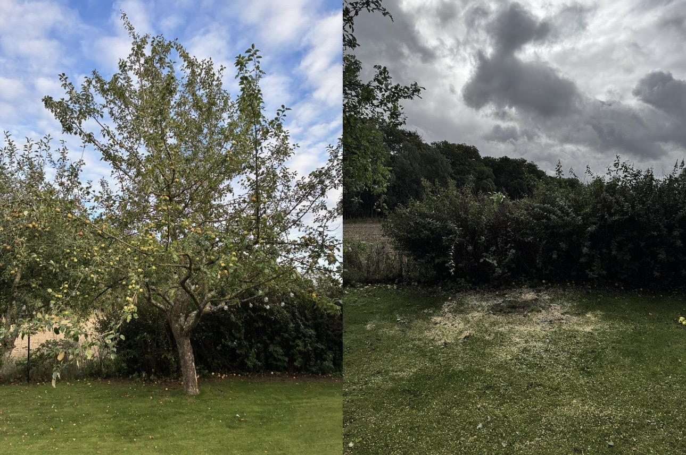
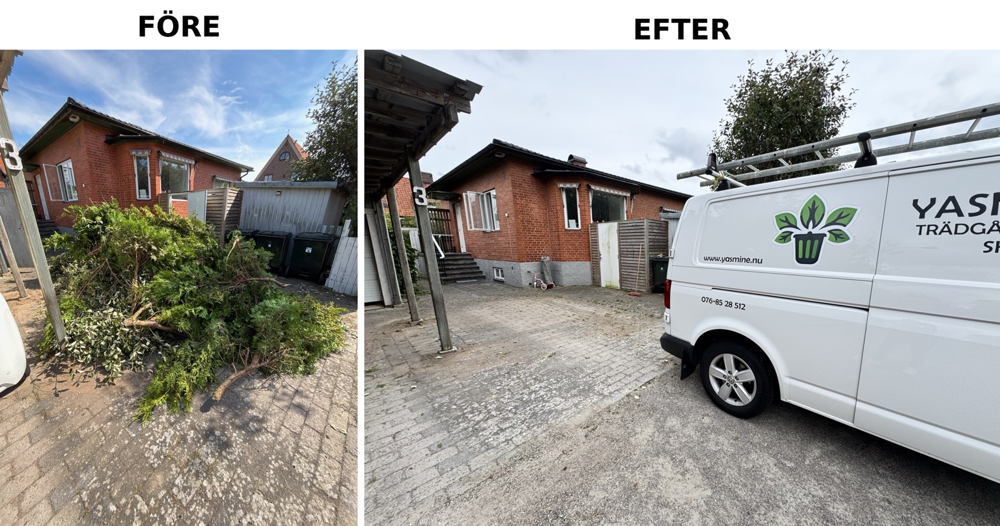
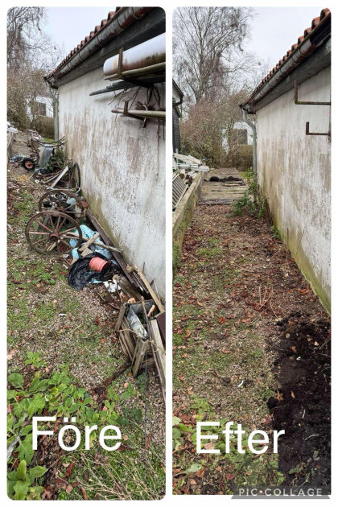
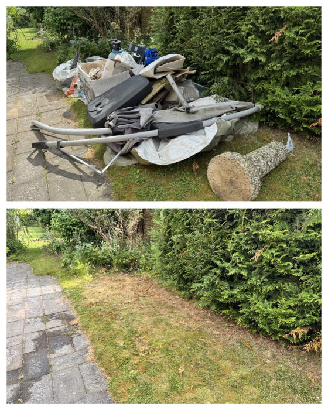
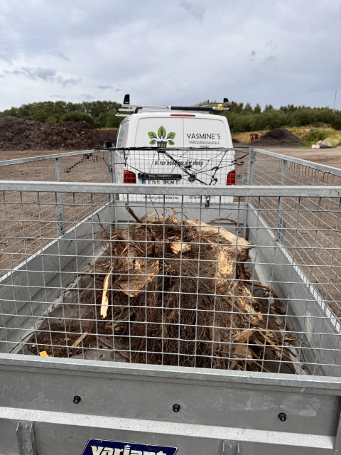
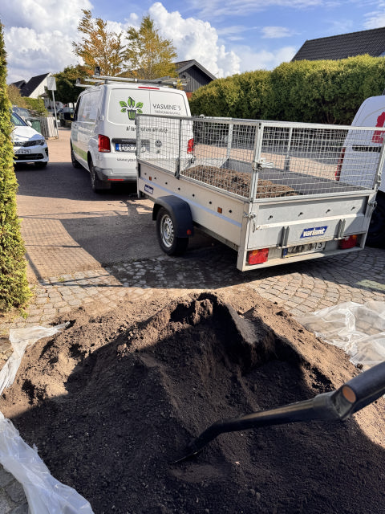

Våra egna foton & filmer
Utförda arbeten.
Resultat i bild.
Se exempel på trädfällning, röjning och bortforsling från vår verksamhet. Här visar vi våra egna bilder och filmer från utförda arbeten.
Se också en film från arbetsdagenVerkliga platser.
Verkligt arbete.


Trädfällning och kapning
Hela originalkollaget. Fruktträdet före till vänster och platsen efter fällning och kapning till höger. Löv och ris ligger kvar under arbetet — ingen färdigstädning påstås.


Fruktträd och platsen efter åtgärd
Originalets båda delbilder visas tillsammans. Ingen beskärning eller ny sammanslagning.


Ris och grenar vid våra fordon
Företagets eget färdiga kollage. Originaltexten FÖRE/EFTER är bevarad.


Röjning längs en byggnad
Originalkollage. Före till vänster och efter till höger.


Ett utrymme före och efter
Originalkollage. Före ovanför och efter nedanför.


Släpet under ett uppdrag
Fristående arbetsbild, inte en efterbild till ett kollage.


Fordon och transport
En egen arbetsbild från verksamheten.
Bilderna är ett urval från verksamheten, inte belägg för en viss beställare eller ort. Tidigare arbetsbilder kan innehålla material som inte ingår i dagens tjänsteutbud. Vi hanterar inte farligt avfall eller bygg- och rivningsavfall. Läs vad vi hjälper till med i dag.
Rörligt ur arbetsdagen
Bortforsling
i praktiken.
Följ ett arbetsmoment från vår verksamhet. Filmen visar hantering av material och bortforsling på plats.
Varje uppdrag planeras utifrån kundens behov och förutsättningarna på arbetsplatsen.
Beskriv ert eget uppdragDin plats, ditt uppdrag
Beskriv uppdraget.
Vi tar det vidare.
Beskriv uppgiften. Bifoga egna bilder när du skickar.